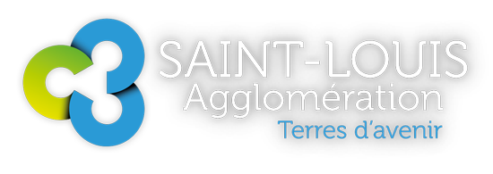
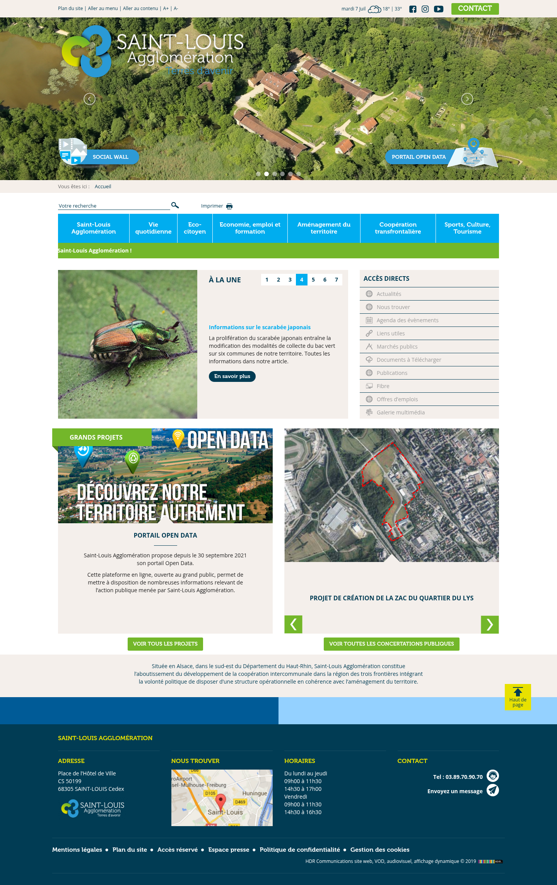
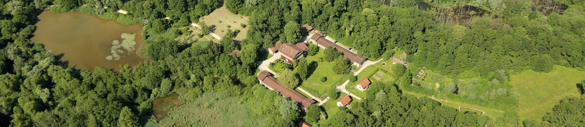
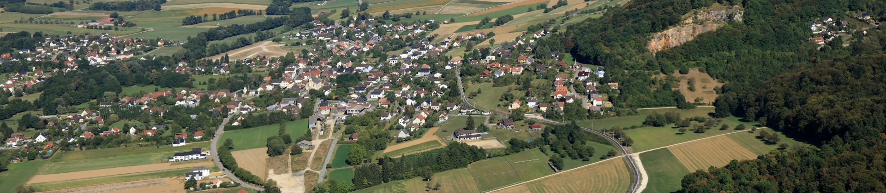
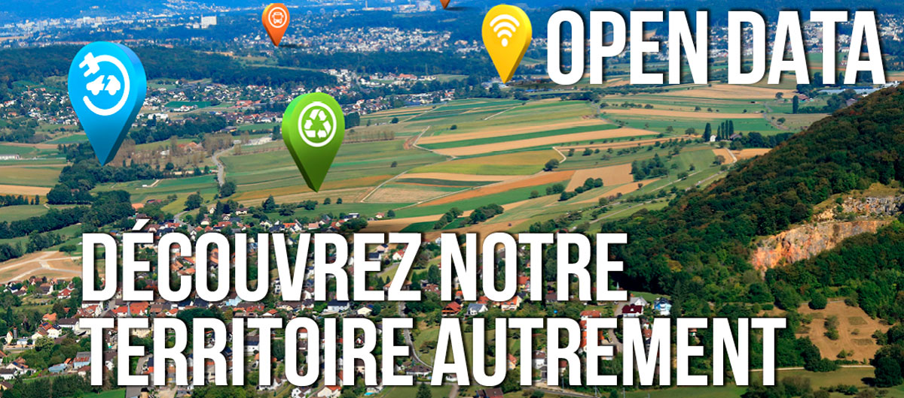
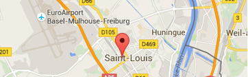

Terres d'avenir
Situé en Alsace, dans le sud-est du Département du Haut-Rhin, dans la région des trois frontières.
Brand review du site actuel · www.agglo-saint-louis.fr
Extraction mono-page (page d'accueil) pour l'uplift presales. La surface de marque et cette revue s'appuient sur la page rendue en direct via Playwright.
Source : _crawl-log.json, _brand-extraction.json. Site WordPress (thème ca3f, HDR Communications © 2019). Consentement : tarteaucitron (écarté avant capture).
Capture plein-page à 1440px de la page d'accueil.

/fr/Source : assets/screenshots/home.png
Identité civique en quatre couleurs (bleu ciel · vert prairie · navy profond · jaune), sur fond blanc et panneaux pierre chaude. Fréquences comptées sur les styles calculés de la page rendue.
Source : _brand-extraction.json § palette
Une seule famille — Open Sans (400/700). Aucun registre display : les titres de section (14px) partagent la taille du corps, la page paraît plate.
Source : _brand-extraction.json § type — scaleAudit.kind: "ad-hoc" (11.9 → 13 → 14 → 36px).
Registre administratif et factuel. Eyebrows en MAJUSCULES, CTA utilitaires.
Source : _brand-extraction.json § voice / voiceTable
Observations descriptives des contradictions internes du site actuel — l'agenda de décision pour la phase de direction. Descriptif, non prescriptif.
11,9 → 13 → 14 → 36px, sans ratio cohérent, et aucun palier display : les titres de section (14px) ont la même taille que le corps. La direction devra décider d'adopter une échelle modulaire et un vrai registre display.
Liens « ACCÈS DIRECTS » (#9C9C9C sur #F4EFEB) = 2,40:1 ; titres cyan #00ADEF sur blanc = 2,55:1 ; libellés blancs sur bouton vert #73B72A = 2,46:1. Tous sous le seuil WCAG (4,5:1 corps / 3:1 grand texte). Problème d'accessibilité.
« En savoir plus » vs « VOIR TOUS LES PROJETS » vs « VOIR TOUTES LES CONCERTATIONS PUBLIQUES » cohabitent pour la même action « voir plus ». La direction devra choisir une voix canonique.
Trois petits rayons en usage (3px, 10px, 14px). La direction devra fixer une valeur unique ou accepter la variance.
Seule la version claire (mot-symbole blanc, pour fonds photo/sombres) est capturée. La refonte aura besoin d'un jeu de variantes (monochrome, inversée dark-on-light, SVG).
Aucune custom property CSS détectée sur la page. Le site actuel n'a pas de couche de tokens ; la cible en introduira une — changement structurel à signaler.
La photographie de paysage (Petite Camargue, vues aériennes) est le meilleur atout, mais elle est réduite à une bande hero de ~420px et à des vignettes. « Terres d'avenir » mérite une image plein-écran.
Détecteurs : brand-review-template.md § Detectors. Contrastes mesurés depuis _brand-extraction.json § palette.
Photographie documentaire du territoire des trois frontières — le meilleur atout de la marque, actuellement sous-dimensionné.




Source : _brand-extraction.json § photography, assets/media/
Rayons de bordure en usage (mode par occurrence). Aucune ombre portée — surfaces plates, séparées par des bandes de couleur et des panneaux pierre.
Source : _brand-extraction.json § motifs.borderRadius · motifs.shadow.stack: []
Source : _brand-extraction.json § motifs.patterns / systemComponents
Barre utilitaire (Plan du site · Aller au menu · Aller au contenu · A+ · A− · météo · réseaux sociaux · CONTACT), puis hero photo plein-largeur, puis nav à onglets thématiques.
Footer navy à 4 colonnes — Adresse (Place de l'Hôtel de Ville, CS 50199, 68305 SAINT-LOUIS Cedex) · Nous trouver (carte) · Horaires (Lun–Jeu 09h–11h30 / 14h30–17h ; Ven 09h–11h30 / 14h30–16h30) · Contact (Tél 03.89.70.90.70). Ligne légale : Mentions légales · Plan du site · Accès réservé · Espace presse · Politique de confidentialité · Gestion des cookies.
Source : _brand-extraction.json § systemComponents, pages/home.json § sections
Source : _brand-extraction.json § logo · assets/logo.png